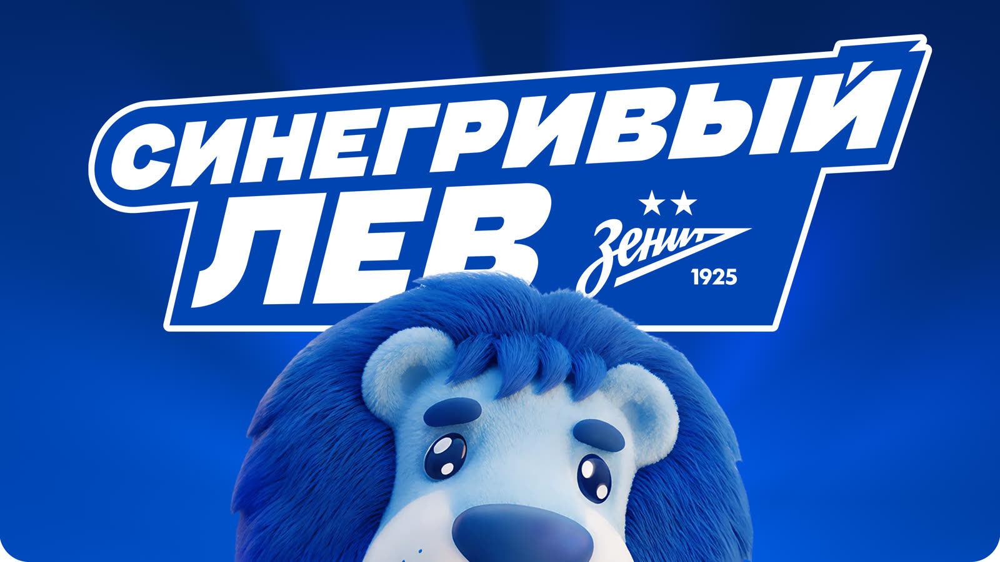
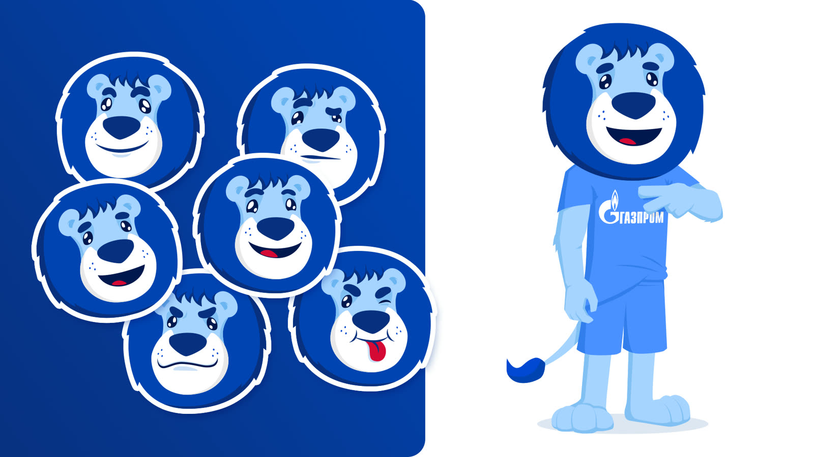
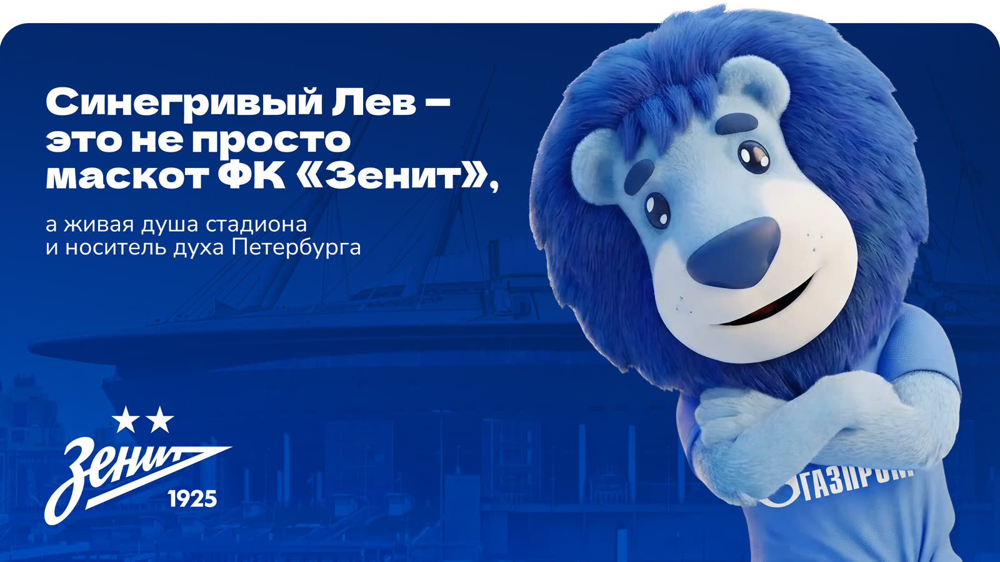
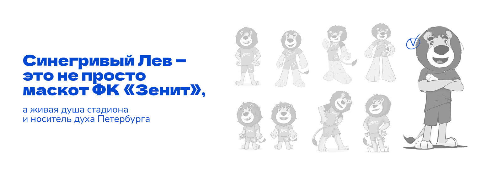
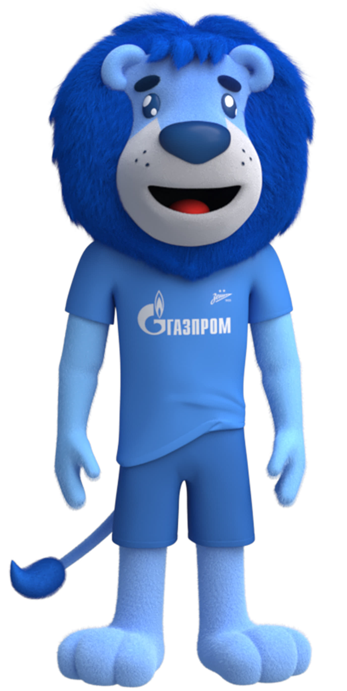
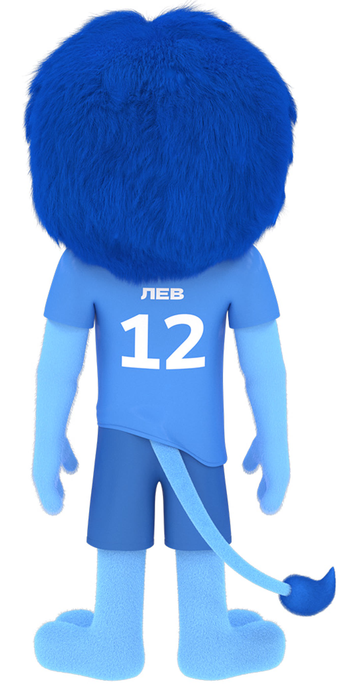

синегривый лев
- клиент
- ФК «Зенит»
- отрасль
- спорт
- формат
- талисман · стратегия, характер, 2D/3D-образ, айдентика, мерч
задача
маскот был только костюмом для аниматора на матчах — нужно было обратить любовь трибун в медиаактив
идея
милый талисман стал добрым хулиганом: персонаж, который работает 365 дней в году, а не 90 минут в день матча
как сделали
- стратегия и характер
вплоть до гороскопа
- образ
десятки пластик: костюм, стикерпак, полка магазина
- айдентика
знак с головой Льва, шрифтовой логотип, кобрендинг с клубом
- мерч
флаффи-капсула с фактурой гривы
результат
+1игрок в составе «Зенита»
2D · 3Dкостюм, стикеры, тв-графика
как это выглядело

и носитель духа Петербурга

2D-образ

собственная линейка




эскизы

